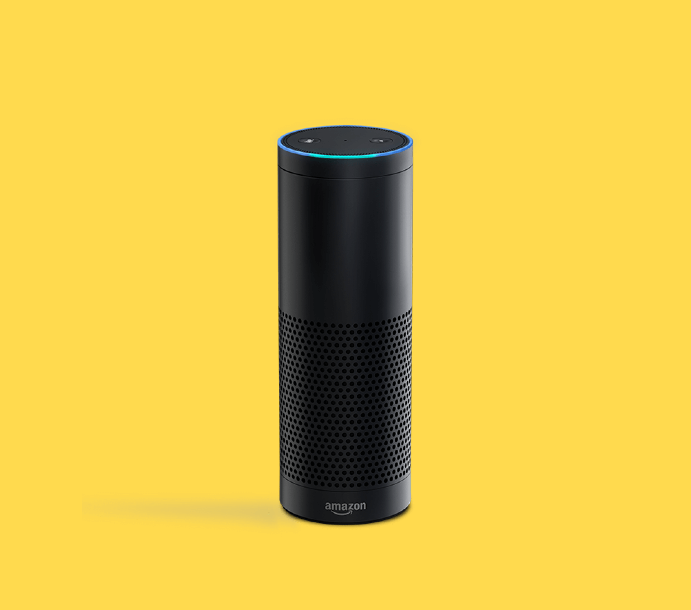

Cook Fresh
Smart Cooking Assistant that Reduces Food Waste

Overview
This is a small exercise I explored with my friend Shengxi in order to learn the basics of designing Voice User Interfaces. We followed the process recommended by Amazon to design the voice interaction.
Problem
College students, with their busy course schedule, usually find cooking and organizing their fridges time-consuming. Some usually forget what they have in the fridge and end up wasting food; others hate spending time trying to figure out what to cook for each meal with the available ingredients.
Solution
We present Cook Fresh, an Alexa skill concept that enables Alexa to suggest recipes based on available ingredients in the fridge, remind users of expiring food, order missing ingredients from Amazon Fresh, and provide step-by-step cooking guidance.
Several products from Samsung and Whirlpool with similiar ideas were later presented at CES 2018, demonstrating the feasibility of our concept.
My Role
Voice User Interface Designer, UX Designer
Timeline
Two Days (Dec. 7 - Dec. 8, 2017)
Team Members
Tony Jin, Shengxi Wu
Tools
Sayspring (Voice Interface Prototyping Tool)
My Contribution
I came up with the initial design idea and finalized it with the help of Shengxi. I conducted secondary research, designed the end-to-end interaction flow, and prototyped the product in Sayspring.
Design Outcome
Our prototype in Sayspring can be viewed here. However, you might need a Sayspring account in order to access it.
This project is still being updated. Please check back in a week or two for more details.